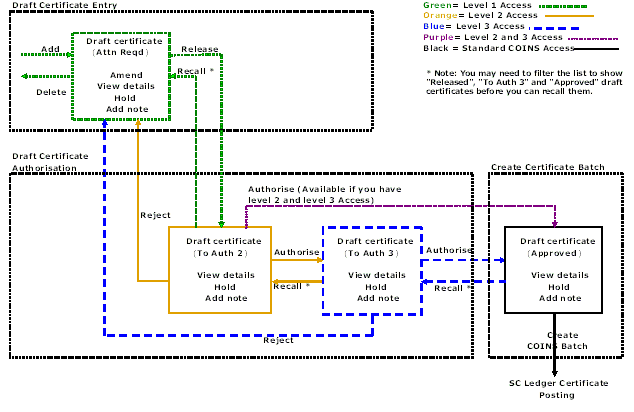

Subcontractor Certificates - Draft Certificates
Draft Certificate Processing provides an authoration process for subcontract certificates prior to them being posted to the ledger. Certificates can be entered and authored by different individuals, and authoration can be carried out in two stages (that is, by two different individuals) if required. Once draft certificates have been authored, they can be included in a batch and posted to the ledgers in the standard way.
A draft certificate passes through different authoration levels:
0 = Attention required. At this level certificates can be amended. They can be put on commercial hold. They can also be released (set to level 1).
1 = Released/Awaiting Level 2 authoration. They can be recalled (set back to level 0).
2 = Awaiting level 3 authoration.
3 = Awaiting batch creation.
For low-value transactions, you can allow a lower level of authoration. You can set the default value below which this applies, and can also define the values on a -by- basis.
Draft Certificate Process Diagram
